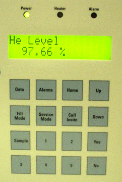

Magmon3 Front Panel User Interface
1 Introduction
The Front Panel of the Magmon3 unit is made up of the following elements:
-
LEDs showing AC Power, Heater activity, and Alarm activity.
-
LCD Display for User Interaction.
-
16-button soft keypad.
This user interface provides easy access and viewing of the software revision, date/time, real-time sensor data and fault codes. Other features include the setting of fill modes and service modes through predefined access codes.
Figure 1. Magmon3 Front Panel User Interface

2 Using the Magmon3 Front Panel
2.1 Softkey Buttons
2.1.1 Data
Pressing Data causes the Magmon3 unit to display a list of sensor parameters and real-time data. Press Up and Down to scroll through the list of items. A single item can be displayed indefinitely, and the Magmon3 will update that value (except for the He Level) once per minute.
Leaving the He Level parameter on the screen will NOT force the Magmon3 to sample a new He Level value each minute. You must press Fill Mode to generate a new helium level sample each minute. See .
Cycling through the Data button entries will display the current IP address and InSite2 connection status.
2.1.2 Alarms
Pressing Alarms causes the Magmon3 to display a list of current fault codes. Press Up and Down to scroll through the list of items. You can only update items in this list by exiting from the Alarm menu and then re-entering the menu. The Alarm LED is lit if there are any fault codes to view.
The Magmon3 tracks potential faults over a ten-minute period before the software activates the Alarm LED and updates the fault codes to minimize false reporting due to noisy transients.
2.1.3 Sample
Pressing Sample causes the Magmon3 to initiate a Helium Level sample and read the current helium level. It may take up to 90 seconds to update the display for the new level(s).
2.1.4 Home
Pressing Home puts the display into normal operating mode. In this mode, the display will cycle through the following information:
When you complete another operation, it is best to return to the Home display.
2.1.5 Call InSite
Pressing Call InSite causes the Magmon3 to immediately connect to InSite and upload any unsent data. Press Yes to confirm the action.
This is only applicable to systems that are remotely monitored while on a GE service contract.
2.2 Fill Mode
Pressing Fill Mode allows the user to select one of three options: Pre-fill Mode, Fill Mode or Ramp Mode.
The password for all Fill Mode selections is 1524.
2.2.1 Pre-Fill Mode
The Pre-fill mode is used for LCC-type magnets prior to a helium fill. This option will change the pressure control settings that are used for heater cycling. The end result is the magnet’s helium vessel pressure is reduced from 4 psi down to approximately 1.0 psi as long as the Cryogen Cooler Cabinet coldhead and recondensor are functioning normally.
Pre-Fill Mode will run for up to 7 days.
If the user selects the Fill mode option before the time period expires, Pre-fill mode is automatically exited and the Fill mode functions take over.
If the time period expires or the user intentionally exits the Pre-fill mode via the soft keypad, the software will automatically put heater cycling into a post-fill operation. During post-fill the operating parameters for pressure control are changed and the heater will be activated for an extended period of time, allowing the magnet’s helium vessel pressure to return to its normal operating state. When in post-fill, heater cycling will not activate any heater alarms for 48 hours.
Pre-fill mode should only be used for LCC, LCC-RD, LCC-RB, DVw, and LCC300 magnet types.
2.2.2 Fill Mode
The Fill mode performs the following functions:
-
Exits Pre-fill mode (if necessary)
-
Disables the pressure control function for heater cycling (for LCC and HFO magnets).
-
Initiates a helium level sample once every minute and refreshes the LCD display information.
The user must select and initiate Fill mode before inserting the fill line stinger into the magnet. When the filling operation is complete, the user will exit the Fill mode option and the software will automatically go into a post-fill operation. During post-fill, the operating parameters for pressure control are changed and the heater will be activated for an extended period of time, allowing the magnet’s helium vessel pressure to return to its normal operating state. When in post-fill, heater cycling will not activate any heater alarms for 48 hours.
2.2.3 Ramp Mode
The Ramp mode performs the following functions:
-
Sets magnet monitor to fill mode code 4. Displays the Ramp mode message on the front display.
-
Holds the magnet pressure at 2.0 PSI and samples helium level every 20 minutes.
-
Ramp mode times out after 10 hours.
The user must select and initiate Ramp mode before inserting the ramp probes into the magnet. When the magnet ramping is completed, the user will exit the Ramp mode option. During post-fill, the operating parameters for pressure control are changed and the heater will be activated for an extended period of time, allowing the magnet’s helium vessel pressure to return to its normal operating state. When in post-fill, heater cycling will not activate any heater alarms for 48 hours.
2.3 Service Mode
Pressing Service Mode allows the user to select one of these options:
-
Web Mode for configuration setup of the unit, using either a DHCP address (Same IP) or a Fixed IP address.
-
Service Mode (for GE Service only).
2.3.1 Web Mode
Users must put the Magmon3 into Web mode to use the configuration tool's web interface. Any user, whether a GE employee or not, can connect and log in to the interface with a laptop or the system host computer. Once the user is logged in, the configuration settings of the Magmon3 can be changed and saved.
When you press Service Mode, you must know what form of Web Mode to enter. Pressing Service Mode repeatedly will cycle the display through the options:
-
Web Mode - Same IP: Magmon3 connected to a network and configured as DHCP or a pre-configured static IP address.
-
Web Mode - Fixed IP: Enables the web interface and forces the Magmon3 IP address to 192.168.0.1.
Press Yes when the correct option is displayed to place the Magmon3 in Web Mode. No password entry is required.
The unit will remain in Web Mode for 45 minutes, after which time it will terminate the connection. Web Mode will also be terminated if the AC power to the unit is cycled off, then on.
Once you are in Web Mode, press Data repeatedly until the IP address is displayed. Write the address down, as you will need it when setting up your laptop or host computer to connect to the unit.
Once you are in Web Mode, you can now attempt to connect to the unit. Refer to Connecting a Laptop to the Magmon3.